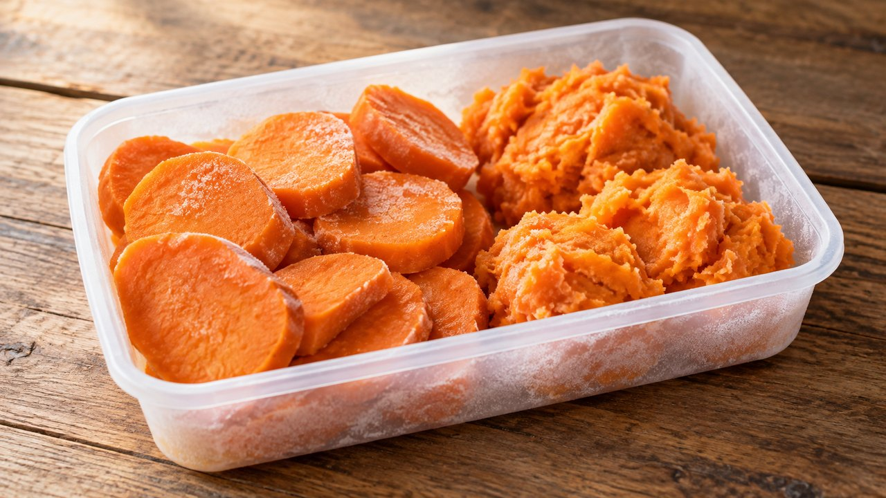

Cooked Sweet Potato Freezer Portions
Southern · Freezing · About 15 min active prep; total estimate 5 hr including freezing. Follow the doneness endpoint rather than the clock.
Yield: Variable; measure cooked portions

Ingredients
- 2 lb cured sweet potatoes, similar in size
Directions
- Choose sweet potatoes cured for at least a week. Wash and cook in water, steam or a 350°F oven until almost tender; size determines the cooking time.
- Cool just enough to handle safely without leaving them on the counter for an extended period. Peel and slice, halve or mash.
- Spread mash in a shallow pan set in ice water and stir to cool, or divide slices into shallow small containers for prompt chilling.
- Pack in meal portions with ½-inch headspace, seal, label and freeze. Reheat and finish cooking until tender when serving.
Notes & serving ideas
Sweet potatoes only: white/Irish potatoes need a different freezing procedure and are no longer matched to this recipe. Finished volume varies. No canning directions are provided; do not can mashed sweet potatoes.
Harvest reference batch: 2 lb sweet potatoes. Only this primary crop is deducted; secondary ingredients and finished yields are not calculated.
Use in Harvest Helper I made this → Add to pantry
Review & safe storage
Original recipe: Family Recipes culinary preparation informed by the references below; the exact formula and storage life have not been laboratory validated or kitchen-tested here. References do not validate it for canning.
Keep frozen at 0°F (−18°C) or below. Thaw in the refrigerator at 40°F (4°C) or below, or use directly in cooking as directed. Use thawed portions within 3 days as a conservative household practice. This recipe is not shelf-stable.
Work with clean hands, sound produce and clean equipment. Refrigerate prepared perishables promptly, within 2 hours (1 hour above 90°F / 32°C); cool hot mixtures in shallow small containers. Never thaw perishables on the counter.